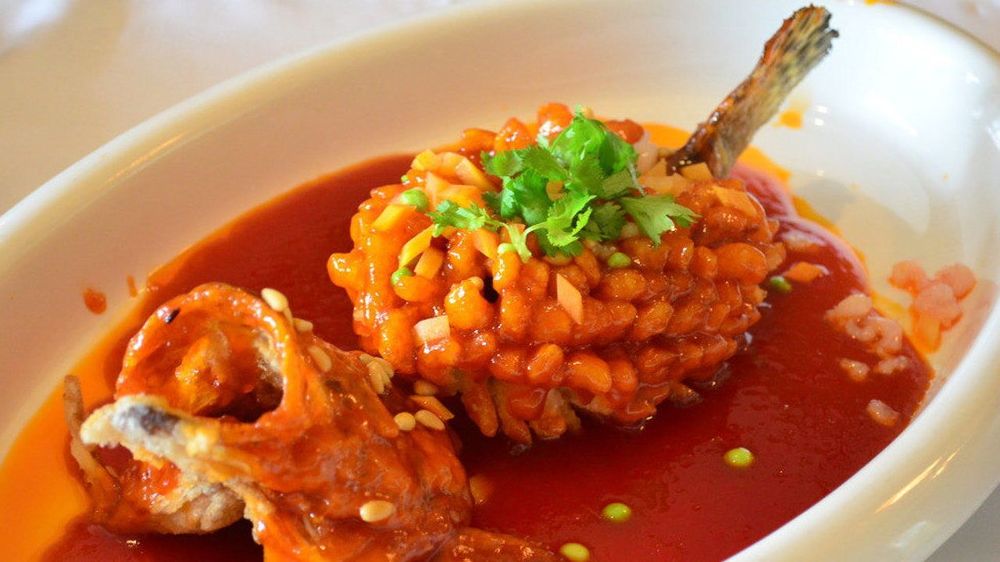
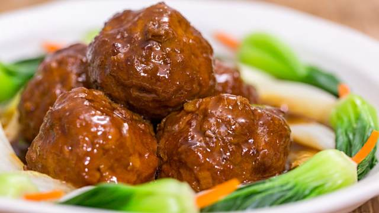
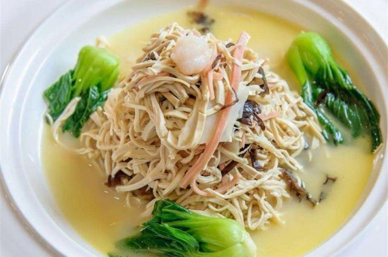

苏菜
菜系简介
苏菜是中国八大菜系之一，源自江苏地区，以鲜香酥烂、原汁原味著称。苏菜讲究"一菜一味，百菜百格"，擅长炖、焖、煨、焐等烹饪方法，注重刀工和火候的掌握。苏菜中的淮扬菜更是以其精致和讲究闻名。
代表菜品

松鼠桂鱼
简介
松鼠桂鱼是苏菜经典名菜，因形似松鼠而得名。鱼肉外酥里嫩，造型美观，酸甜适口，充分展现了苏菜的刀工和火候技巧。
主要食材
- 桂鱼 1条
- 松子仁、青豆
- 番茄酱、白糖
- 淀粉、醋
做法步骤
- 桂鱼去骨改刀成松鼠形
- 拍粉油炸至外酥里嫩
- 调制酸甜酱汁
- 浇汁，点缀松子青豆

狮子头
简介
狮子头是淮扬菜代表，选用肥瘦相间的猪肉手工剁制，肉质鲜嫩，汤汁醇厚，入口即化，充分体现了苏菜的精细和讲究。
主要食材
- 五花肉 400克
- 荸荠、香菇
- 青菜心、高汤
- 姜末、料酒
做法步骤
- 手工剁制肉馅
- 加入配料搅拌上劲
- 做成大肉丸
- 小火慢炖2小时

大煮干丝
简介
大煮干丝是扬州传统名菜，以豆腐干为主料，刀工精细，汤鲜味美，体现了苏菜"刀工精细、火候讲究"的特点。
主要食材
- 白豆腐干 300克
- 鸡丝、火腿丝
- 虾仁、高汤
- 青菜心、姜丝
做法步骤
- 豆腐干切细丝
- 焯水去除豆腥味
- 加入高汤和配料
- 小火煮至入味